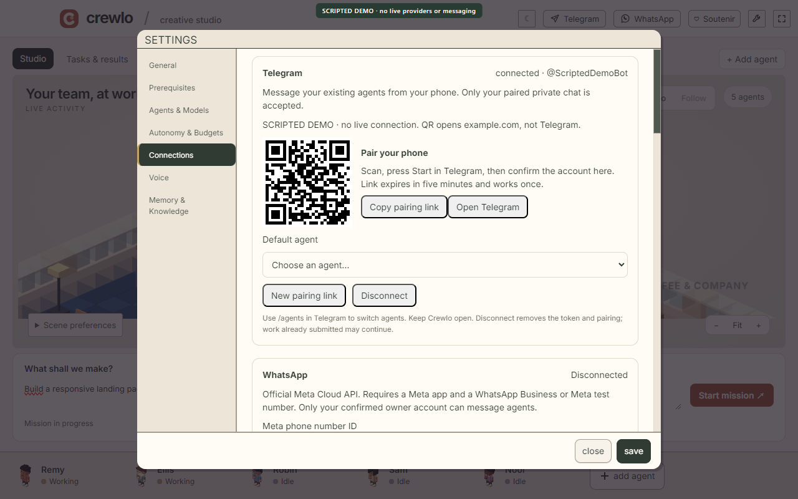

Telegram
THE QUICKER SETUPYour own bot. Your existing crew. A private chat that starts with confirmation on your desktop.
TRY THIS AFTER PAIRING
/agentsList your crew, then select an agent.- Create a bot with BotFather
- Enter its token in Crewlo’s Telegram panel
- Open the pairing link and confirm on your PC
